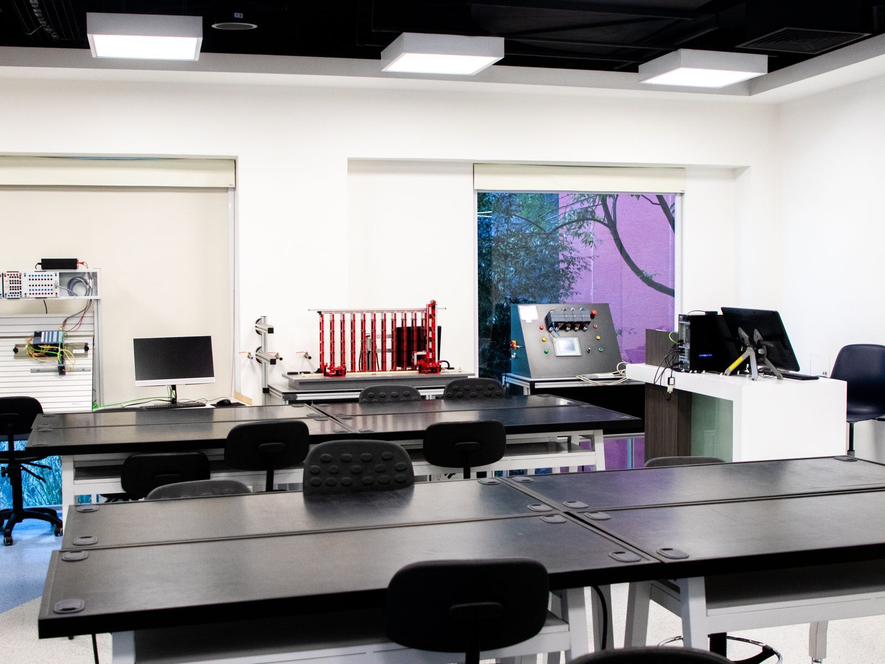

Empowering Next-Generation Thin-Film Research
i-Photonics designs and integrates state-of-the-art vacuum coating machinery, in-situ optical monitoring systems and specialised processes. Dymek brings that technology to research labs, optical component manufacturers and photonics teams across the region.
Why we do what we do
Remove hardware barriers to research
To provide photonics research laboratories and precision optics manufacturers with adaptable, reliable and high-precision vacuum deposition platforms, so scientists can focus on fundamental research and material discoveries.
- Configurable process platforms built around research requirements
- Real-time optical monitoring for precise layer endpoint control
From lab synthesis to full-scale manufacturing
To set the benchmark for low-loss, high-density optical thin-film processes across lasers, space-borne sensors, quantum technology and infrared optics.
- Modular platforms scaling from laboratory R&D to production
- Equipment retrofitting to maximise existing vacuum coater assets
Our core pillars
Every system and every coater upgrade is guided by four principles.
- 01 · PrecisionAtomic-scale layer accuracy and ultra-low scatter loss for demanding laser optics.
- 02 · FlexibilityConfigurable sources, substrate holders and monitoring systems that adapt as research shifts.
- 03 · ExtensibilityExtending the working life of existing vacuum tools with advanced in-situ optical monitoring retrofits.
- 04 · Regional supportDirect application support across Southeast Asia from Dymek, with i-Photonics engineering behind it.
i-Photonics builds it. Dymek brings it to you.
i-Photonics is a Lithuanian company that designs and manufactures vacuum coating systems and runs its own coating workshop, with ISO 9001 and ISO 14001 certification. Dymek is your local contact in Southeast Asia for consultation, quotations, installation, training and service, in your time zone and your language.
Ask Dymek about i-Photonics systems
Supported across Southeast Asia by Dymek
Our scientific and industrial customers receive rapid technical support, on-site commissioning, process optimisation and maintenance through Dymek's regional team, backed directly by i-Photonics.
Contact technical team